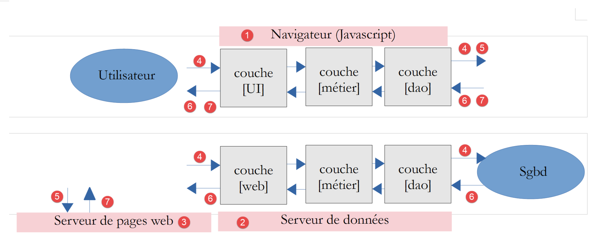
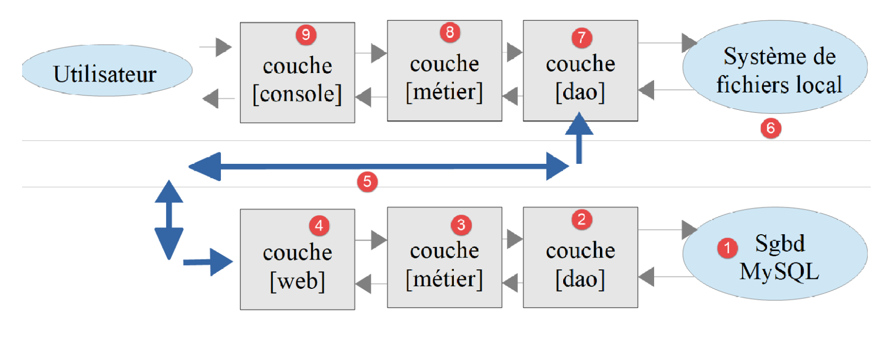

1. Introduction
Le PDF du document est ICI.
Les codes du document sont ICI.
Ce document est un produit de l'IA Claude d'Anthropic. C'est la réécriture, pour le langage PHP 8, du cours Introduction au langage PHP 7 par l'exemple écrit par Serge Tahé en juillet 2019. Il en reprend le plan, les exemples et le fil rouge, et en change le langage :
- le cours de 2019 utilisait PHP 7.3. Depuis, PHP a connu six versions majeures : 8.0 (2020), 8.1 (2021), 8.2 (2022), 8.3 (2023), 8.4 (2024) et 8.5 (2025). Ce document utilise PHP 8.5 ;
- entre ces deux versions, PHP a beaucoup changé : de nombreuses fonctionnalités sont apparues (types, énumérations, classes en lecture seule, [match], arguments nommés…), et de nombreuses autres sont devenues dépréciées (en anglais *deprecated*) : elles fonctionnent encore, mais PHP affiche un message [Deprecated] à chaque utilisation, pour prévenir qu'elles disparaîtront dans une version future. Le code de ce document n'utilise aucune fonctionnalité dépréciée : tous les scripts ont été exécutés avec PHP 8.5 configuré pour afficher toutes les erreurs, tous les avertissements et toutes les dépréciations, et aucun message [Deprecated] n'apparaît dans leurs résultats ;
- les outils ont eux aussi changé : l'éditeur [VS Code] remplace l'IDE [NetBeans], le framework de tests [PHPUnit] remplace [Codeception], la commande [curl] remplace l'outil [Postman], la bibliothèque [Symfony Mailer] remplace [SwiftMailer], abandonnée, et le serveur de courrier [Mailpit] remplace [hMailServer], lui aussi abandonné.
Ce document propose une liste de scripts console PHP dans différents domaines (structures du langage, classes, accès aux fichiers, aux bases de données, au réseau internet). La programmation web est abordée via des services web. On appelle dans ce document service web toute application web produisant des données (texte brut, JSON, XML) plutôt que des pages HTML. Ce sont des serveurs de données et non des serveurs de pages web, mélange de HTML, de CSS et de JavaScript. On y aborde des concepts web classiques (protocole HTTP, réponses JSON ou XML, gestion de session, authentification) également utilisés dans la programmation web classique. La dernière partie du document construit d'ailleurs aussi une application web HTML.
1.1. La place de PHP dans une application client / serveur
De nos jours, il est fréquent de construire des applications web en mode client / serveur :

- en [1], le navigateur web affiche des pages web à destination d'un utilisateur. Ces pages contiennent du JavaScript implémentant un client d'un service web de données [2] ainsi qu'un client d'un serveur de fragments de pages web [3]. Des frameworks JavaScript tels que [Vue.js], [React] ou [Angular] sont faits pour cela ;
- en [2], le serveur web est un serveur de données. Il peut être écrit dans n'importe quel langage, par exemple en PHP. Il ne produit pas de pages web au sens classique (HTML, CSS, JavaScript) sauf peut-être la première fois. Mais cette première page peut être obtenue d'un serveur web classique [3]. Le JavaScript de la page initiale va alors générer les différentes pages web de l'application en obtenant les données [4] à afficher auprès du serveur de données [2]. Il peut également obtenir des fragments de page web [5] pour habiller ces données auprès du serveur de pages web [3] ;
- en [4], l'utilisateur initie une action ;
- en [6, 7], il reçoit des données habillées par un fragment de page web .
Nous allons dans ce document écrire des applications client / serveur en PHP ayant la structure suivante :

On a là une application client / serveur écrite entièrement en PHP. Un script console [9] interrogera un serveur de données [4]. Ce qui sera appris ici pour écrire le service de données pourra être réutilisé dans une application web : le service de données en PHP pourra être conservé et le client PHP remplacé par un client JavaScript.
Comme fil rouge du document, nous construirons un service de calcul de l'impôt sur le revenu en 13 versions. La version 12 aura l'architecture suivante :

La couche [web] du serveur aura une architecture MVC (Modèle – Vue – Contrôleur). Elle saura répondre en JSON, en XML ou en HTML. Tout le cours vise à construire cette version, que la version 13 sécurise.
1.2. Ce qui a changé entre PHP 7 et PHP 8
Les nouveautés de PHP 8 sont présentées au fil des chapitres, au moment où elles servent, et toujours comparées à ce que faisait le cours PHP 7. Voici les principales, avec le chapitre où elles apparaissent :
Nouveauté | Version | Chapitre |
le typage strict [declare(strict_types=1)], les types des paramètres et des résultats, [mixed], les types union [int|float], les types nullables [?string] | 7.0 à 8.0 | Les bases de PHP |
l'expression [match], l'opérateur nullsafe [?->], les arguments nommés | 8.0 | Les bases de PHP |
[str_contains], [str_starts_with], [str_ends_with], [array_is_list], [json_validate], [array_find], [array_any], [array_all], [array_first], [array_last] | 8.0 à 8.5 | Les bases de PHP |
les fonctions fléchées [fn], les callables de première classe [f(...)], l'opérateur pipe [|>] | 7.4 à 8.5 | Les bases de PHP |
les attributs typés, la promotion des paramètres du constructeur | 7.4, 8.0 | Les classes |
les propriétés et les classes en lecture seule [readonly] | 8.1, 8.2 | Les classes |
les énumérations [enum] | 8.1 | Les classes |
les crochets de propriétés (*property hooks*) et la visibilité asymétrique [public private(set)] | 8.4 | Les classes |
[clone] avec modification des attributs, l'attribut [#[\Override]] | 8.5, 8.3 | Les classes |
les types intersection [A&B], [new] dans les valeurs par défaut | 8.1 | Les interfaces |
les erreurs devenues exceptions ([TypeError], [ValueError], [DivisionByZeroError]…), [throw] expression, [catch] sans variable | 8.0 | Les exceptions et erreurs |
les constantes dans les traits | 8.2 | Les traits |
[PDO::connect()] et les sous-classes [Pdo\Mysql], [Pdo\Pgsql] | 8.4 | MySQL |
l'attribut [#[\SensitiveParameter]] | 8.2 | Exercice d'application, versions 5 et suivantes |
la nouvelle API [Dom\XMLDocument] | 8.4 | Traitement de documents XML |
Et voici, à l'inverse, les principales fonctionnalités utilisées par le cours PHP 7 qui sont aujourd'hui dépréciées ou supprimées, avec ce qui les remplace dans ce document :
Fonctionnalité du cours PHP 7 | Statut | Remplacement |
les attributs dynamiques (créés par simple affectation [$objet->x = 1]) | déprécié en 8.2 | des attributs déclarés, ou la classe [stdClass] |
l'interpolation ["${var}"] | dépréciée en 8.2 | ["$var"] ou ["{$var}"] |
[utf8_encode], [utf8_decode] | dépréciées en 8.2 | [mb_convert_encoding] |
les paramètres implicitement nullables [Type $x = null] | dépréciés en 8.4 | [?Type $x = null] |
les conversions [(integer)], [(boolean)], [(double)] | dépréciées en 8.5 | [(int)], [(bool)], [(float)] |
les constantes [PDO::MYSQL_ATTR_*] | dépréciées en 8.5 | [Pdo\Mysql::ATTR_*] |
les fonctions [imap_*] | retirées du cœur de PHP en 8.4 | des clients POP3 / IMAP écrits avec des sockets |
la bibliothèque [SwiftMailer] | abandonnée | [Symfony Mailer] |
la bibliothèque [php-mime-mail-parser] | nécessite une extension non fournie | [zbateson/mail-mime-parser] |
[Codeception] | remplacé | [PHPUnit] 12 |
la syntaxe Apache 2.2 [deny from all] | obsolète | [Require all denied] (Apache 2.4) |
1.3. Les outils utilisés
Les exemples ont été écrits et testés avec les outils suivants (leur installation est décrite au chapitre suivant) :
- [PHP] 8.5, configuré pour signaler toutes les erreurs, tous les avertissements et toutes les dépréciations ;
- le paquetage [Laragon] 8, qui réunit sous [Windows] PHP 8.5, le serveur web [Apache] 2.4, le SGBD [MySQL] 8.4, le serveur [Redis] et le gestionnaire de dépendances [Composer] ; le SGBD [PostgreSQL] s'y ajoute en quelques clics ;
- l'éditeur [Visual Studio Code] (VS Code) et son extension [PHP Intelephense] ;
- les bibliothèques PHP installées avec [Composer] : [symfony/http-foundation], [symfony/http-client], [symfony/mailer], [symfony/mime] 8, [predis/predis] 3, [zbateson/mail-mime-parser] 3 et, pour les tests, [phpunit/phpunit] 12 ;
- le serveur de courrier de test [Mailpit] et, pour le protocole IMAP, un serveur IMAP (un compte [Gmail], ou un serveur local) ;
- l'outil en ligne de commande [curl], fourni avec [Windows], qui affiche les échanges HTTP bruts ;
- un navigateur ([Chrome], [Firefox], [Edge]…).
Les scripts de ce document sont commentés et leur exécution console reproduite. Des explications supplémentaires sont parfois fournies. Le document nécessite une lecture active : pour comprendre un script, il faut à la fois lire son code, ses commentaires et ses résultats d'exécution. Les copies d'écran des pages web ont été faites avec un navigateur piloté par programme : ce sont de vraies pages des applications du cours.
1.4. Les exemples
Les codes du document sont rangés dans un unique dossier [php8-oct-2026] :
Le dossier [php8-oct-2026] doit être placé dans le dossier [www] de [Laragon] (par exemple [C:\laragon\www\php8-oct-2026]) : c'est la racine du serveur web [Apache]. Les scripts web sont alors accessibles à des URL de la forme [http://localhost/php8-oct-2026/scripts-web/...].
1.5. Contenu du document
Chapitre | Contenu |
Installation | Laragon, PHP 8.5, VS Code, Composer |
Les bases de PHP | variables, types, typage strict, tableaux, chaînes, fonctions, fichiers texte, JSON |
Exercice d'application, versions 1 et 2 | le calcul de l'impôt, avec des fonctions |
Les classes, les interfaces | classes, héritage, attributs typés, [readonly], énumérations, crochets de propriétés, interfaces |
Les exceptions et erreurs | la hiérarchie [Throwable] de PHP 8, ses propres exceptions |
Exercice d'application, version 3 | le calcul de l'impôt, avec des classes |
Les traits, les applications en couches | réutiliser du code, architecture [dao] / [métier] / [console] |
Exercice d'application, version 4 | le calcul de l'impôt en couches, tests [PHPUnit] |
Utilisation du SGBD MySQL | PDO, ordres SQL préparés, transactions |
Exercice d'application, versions 5 à 7 | les données fiscales dans une base MySQL, puis PostgreSQL, puis l'une ou l'autre |
Fonctions réseau | TCP, HTTP, SMTP, POP3, IMAP |
Services web | pages statiques et dynamiques, JSON, paramètres, sessions, authentification, HTTPS |
Exercice d'application, versions 8 à 10 | un serveur de calcul de l'impôt et son client, journalisation, envoi de courriels, cache [Redis] |
Traitement de documents XML | SimpleXML, l'API DOM de PHP 8.4 |
Exercice d'application, version 11 | le serveur de calcul de l'impôt répond en XML |
Exercice d'application, version 12 | un serveur MVC répondant en JSON, XML ou HTML, une application web, un client du service JSON |
Exercice d'application, version 13 | sécuriser l'accès aux fichiers de l'application |
Ce sont tous des chapitres pour débutants en PHP. Il est cependant supposé que le lecteur a déjà programmé dans un langage quelconque, et qu'il sait ce que sont une variable, une boucle, une fonction.